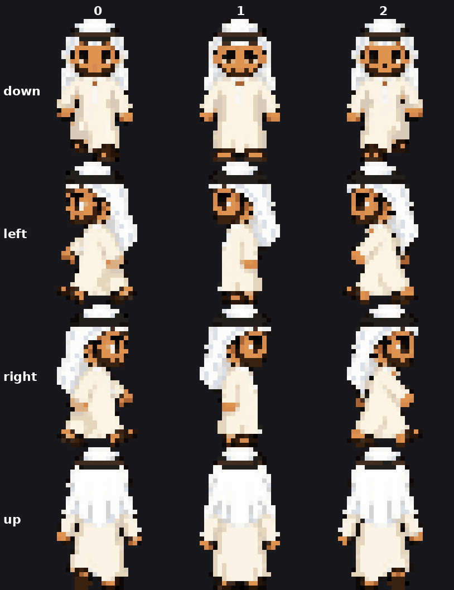
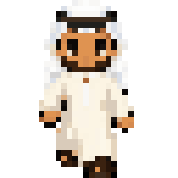
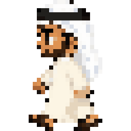
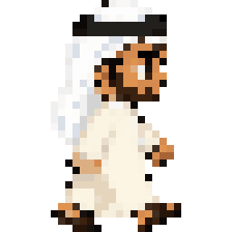
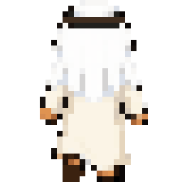
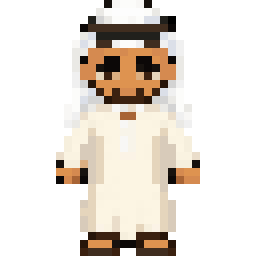
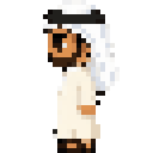
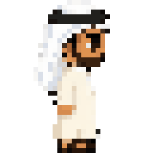
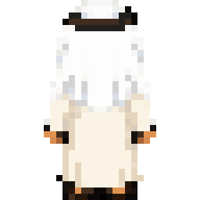

96x128 RGBA · rows down/left/right/up · 3 frames of 32px
· walk [0,1,2,1] @10fps · idle = static frame 1
down cell: 32px tall, 18px wide, 427 ink px
(pipoya default: 32 tall, 23-27 wide, ~600 ink)








